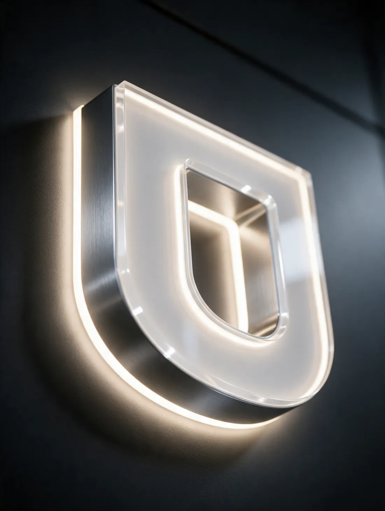
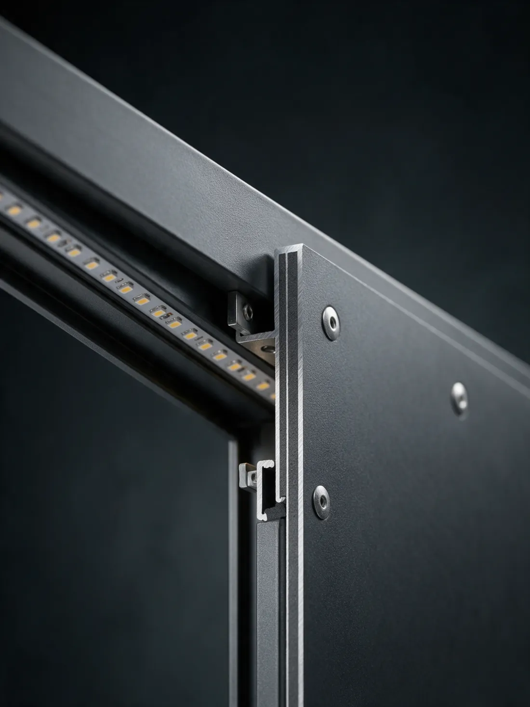

LED sign boards
Illuminated names and lettering for storefronts and commercial entrances.
Big 9 Signages · Designed to be seen
Designed, fabricated, illuminated and installed for spaces that demand attention.
Every project starts with the space.
We measure the frontage from the road, not from the drawing office. What the passing traffic actually sees decides the size of everything else.
Designed around your brand, then engineered layer by layer.
Frame, panel, illumination, fixings. Each layer specified, not guessed.
Then we turn it on, and it reads from the street.
The problem
A building without signage is a building the street walks past. Not because it is bad, and not because nobody wants what is inside it. Because from the road, at speed, in the dark, it reads as nothing in particular.
Why it matters
Be seen.
Signage is not a board on a wall. It is the first physical interaction a customer has with your business, and it happens before anyone walks in.
Be remembered.
Legible, distinctive, lit after dark. Built so it still reads from the far pavement, in the rain, at closing time.
Be chosen.
A facade that looks engineered says the work inside is engineered too. That is the cheapest credibility you will ever install.
Eight standard systems, each with a real material, a real fixing and a real light source. Most projects are a combination of two or three.
Not sure which you need? That is what the site visit is for. We measure, photograph and come back with two options and a price for each.
Ask for a site visit

Material laboratory
Most signage fails at a joint. Water gets behind a panel, a bracket corrodes, an LED module dies and there is no way to reach it. We build for disassembly: a layer can be replaced without taking the whole sign down.
Acrylic and PVC faces are UV-stable and weather-rated. Aluminium and ACP frames are powder-coated and drain at the base, not through the face. LED modules sit on a replaceable rail with a driver you can swap by hand. Every fixing is mechanical, never chemical-bonded into the substrate.
On a site visit we will show you a section sample of the exact build you are getting, so you are approving a physical thing rather than a promise. Specification sheets are provided before anything is ordered.
How it works
You are not managing a project team. You are dealing with the people who will be standing on the scaffolding.
We visit, photograph the frontage from the road at eye level, measure the substrate and record fixing zones. Landlord or municipal permissions get checked here, not after the sign is made.
Your logo is modelled onto the actual façade at actual scale. You see the sign before it exists, from the angle the passing traffic will see it.
Face, finish and light source chosen together, because daylight face and halo-lit face are different products and we will say so if the cheaper one will not read at night.
Built in the workshop, powered up and photographed lit before it leaves. You get the photos before the truck does.
Installed by our own team, commissioned on site, and we come back if anything needs attention. Access, scaffold and electrical work are handled by us.
Specification studio
Four choices. The preview updates as you go, and every selection is written into your bill of materials on the left.
This is an indicative preview, not a quote. Exact pricing needs a measurement, and a measurement needs a site visit. Tell us your preferred options in the enquiry below.
Discuss this designThe six frontages below are representative conditions rather than named jobs, because a photograph of a building is not proof that we built on it. What each one does show is the system that suits that situation, and why.
Want the full project list for your industry? Ask and we will send it.
Request the portfolioHyderabad · Telangana
Big 9 Signages designs, fabricates and installs signage for shops, offices, restaurants and commercial buildings in Hyderabad. Start with your frontage, brand artwork and preferred lighting; the final build is specified around your site.
Illuminated names and lettering for storefronts and commercial entrances.
Custom acrylic letters and panels for shops, reception areas and interiors.
Composite-panel fascia systems for building identity and entrance branding.
Continuous illuminated lettering for hospitality spaces and feature walls.
Directory and directional signage for offices, institutions and commercial sites.
For a quotation, share your Hyderabad site location, approximate sign dimensions, logo and a photograph of the installation area. Materials, illumination and access requirements determine the final price.
Request a Hyderabad signage quotationRequest a quotation
Tell us your name, number and city. We’ll discuss the right signage for your space, arrange measurements and prepare a quotation.
The Big 9 collection
Explore images from our existing signage catalogue, then tell us what you have in mind.

Questions
It depends entirely on where it is and what it is made of, which is why we ask about exposure before specifying anything. A shaded north-facing acrylic sign and a coastal ACP facade are different products with different service lives. Ask us for the material data sheet for the exact build you are getting, and we will tell you what it is rated for rather than quoting a number that applies to every project we have ever done.
The face panels are. What matters is the joints and the fixings, so the build is designed as a drainable assembly: water enters at the base and leaves at the base, and no fixing is bonded into the substrate where it cannot be replaced.
LED is brighter, cheaper to run, has no glass and lasts longer. Neon flex has a warmer, more continuous glow and is the right choice for hospitality and feature walls. For a name that has to be read from the road at night, LED front-lighting or halo-lighting is normally the more reliable answer.
We check the requirement as part of the site visit and we will tell you early if signage on that frontage needs approval, because discovering it after fabrication is the expensive way to find out. Getting the paperwork moving is part of the job, not something we hand back to you.
A single fascia sign is usually a day or two on site once fabrication is finished. A large facade or a pylon is longer, and it depends on access, hours of working and whether scaffold or a lift is needed. You get a dated schedule before we start.
Yes. Almost everything we make is made to the measurement of that specific frontage rather than to a standard sheet size. Send the approximate dimensions and we will tell you what the closest manufacturable size is.
Tell us and we will come back. Because the build is designed for disassembly, a dead LED module or a failed driver can usually be swapped without taking the whole sign down. If you ask for a written warranty term at quotation stage we will give you one.
Often, yes. Send photographs and the location and we will tell you honestly whether it is something we can help with.
Speak to us about your location and we will tell you straight away whether we can reach it. We would rather say no than take a job we cannot service properly.
Send the enquiry form with as much or as little as you know: a photograph of the frontage and the rough size is enough to start a conversation. A firm quotation needs a measurement, so expect a site visit early in the process.
Big 9 Signages provides custom signage design, fabrication and installation for Hyderabad businesses. Share your site location, frontage photograph and approximate dimensions to discuss a suitable sign and quotation.
The price depends on dimensions, materials, illumination, mounting height and site access. Request a quotation with your requirements; a confirmed price needs the final specification and measurements.